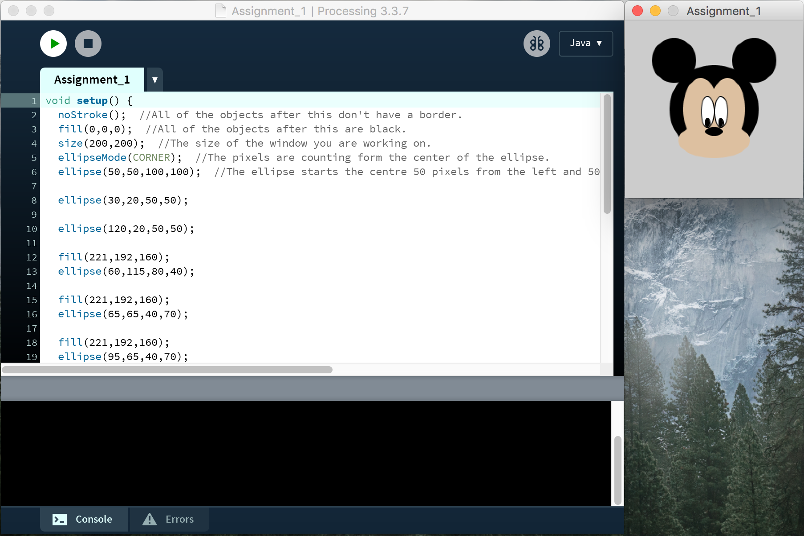
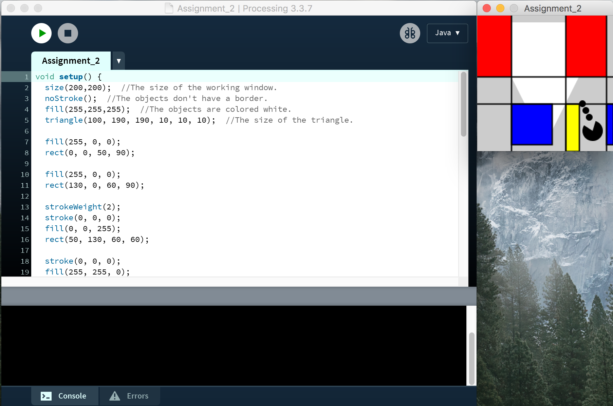
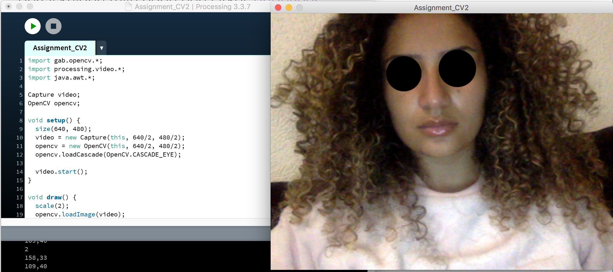
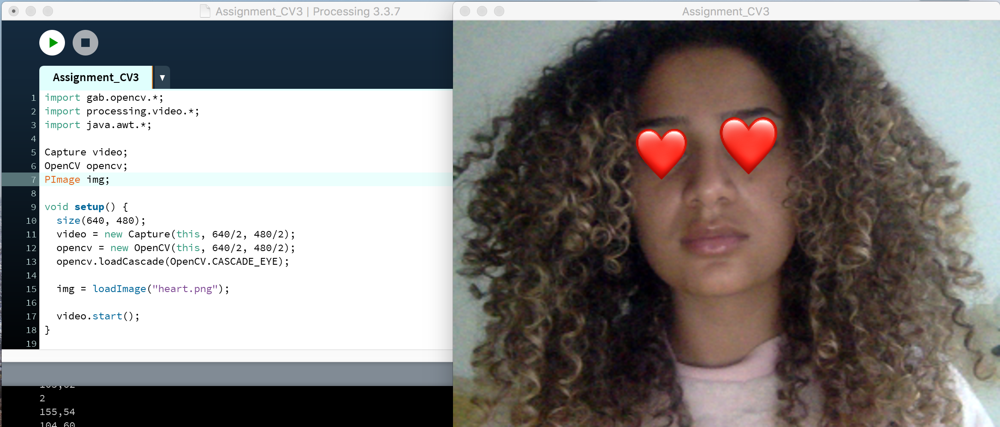

Computer Vision
Op deze pagina staan de opdrachten die ik tijdens het eerste werkcollege heb gemaakt. Tijdens dit werkcollege heb ik voor het eerst met Processing gewerkt, ik vond het een heel leuk programma om mee te werken. Het lijkt namelijk ook een beetje op JavaScript.
Assignment 1 🐭
 Voor de eerste opdracht moesten we drie of meer cirkels maken in Processing. Ik kon drie basiccirkels maken, maar dat heb ik niet gedaan. Ik heb geprobeerd een gezicht te bedenken die ik met cirkels kon maken. Dit is Mickey Mouse geworden! Hiernaast de code de uitkomst.
Assignment 2 🖼️
 Voor de tweede opdracht moesten we vier verschillende vormen maken. Ook hier heb ik er weer voor gekozen om niet zomaar een paar vormen te maken. Hier heb ik een combinatie gemaakt van een mondriaan schilderij, met pacman. Een wat ongebruikelijke combinatie, maar zo heb ik het toch gedaan!
Assignment 3 ❤️

 De derde opdracht bestaat uit twee interactieve vormen waarbij de muis wordt gevolgd. Hier heb ik ervoor gekozen om een hart te maken, met een lijn die wordt gevolgd. Wanneer er met de muis wordt bewogen, verandert het hart van vorm.
De derde opdracht bestaat uit twee interactieve vormen waarbij de muis wordt gevolgd. Hier heb ik ervoor gekozen om een hart te maken, met een lijn die wordt gevolgd. Wanneer er met de muis wordt bewogen, verandert het hart van vorm.
Assignment CV1 ⭕
 Voor deze opdracht heb ik een circel om het gezicht heen geplaatst, door de code die is geschreven wordt het gezicht gedetecteerd. Hierna wordt er aan het programma verteld om een circel om het gedetecteerde object heen te tekenen.
Voor deze opdracht heb ik een circel om het gezicht heen geplaatst, door de code die is geschreven wordt het gezicht gedetecteerd. Hierna wordt er aan het programma verteld om een circel om het gedetecteerde object heen te tekenen.
Assignment CV2 ⚫

Bij deze odpracht was het de bedoeling om iets voor de ogen te plaatsen, om zo anoniem te lijken! Dit heb ik voor de verandering met twee cirkels gedaan.
Assignment CV3 😍

Bij de laatste odpracht was het de bedoeling om iets extra's te doen met de codes die je eerder hebt gebruikt. Dit heb ik gedaan door de rondjes voor mijn ogen te vervangen met een afbeelding. Zo heb ik het welbekende hearteyes gezicht gecreërd.